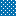
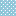
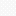
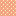

<!doctype html>
<html lang="en">
    <head>
        <meta charset="utf-8">
        <meta http-equiv="X-UA-Compatible" content="IE=edge">
        <meta name="viewport" content="initial-scale=1,user-scalable=no,maximum-scale=1,width=device-width">
        <meta name="mobile-web-app-capable" content="yes">
        <meta name="apple-mobile-web-app-capable" content="yes">
        <link rel="stylesheet" href="css/leaflet.css"><link rel="stylesheet" href="css/L.Control.Locate.min.css">
        <link rel="stylesheet" href="css/qgis2web.css"><link rel="stylesheet" href="css/fontawesome-all.min.css">
        <link rel="stylesheet" href="css/leaflet-control-geocoder.Geocoder.css">
        <link rel="stylesheet" href="css/leaflet-measure.css">
        <style>
        html, body, #map {
            width: 100%;
            height: 100%;
            padding: 0;
            margin: 0;
        }
        </style>
        <title>Skripsi-222112043</title>
    </head>
    <body>
        <div id="map">
        </div>
        <script src="js/qgis2web_expressions.js"></script>
        <script src="js/leaflet.js"></script><script src="js/L.Control.Locate.min.js"></script>
        <script src="js/leaflet.rotatedMarker.js"></script>
        <script src="js/leaflet.pattern.js"></script>
        <script src="js/leaflet-hash.js"></script>
        <script src="js/Autolinker.min.js"></script>
        <script src="js/rbush.min.js"></script>
        <script src="js/labelgun.min.js"></script>
        <script src="js/labels.js"></script>
        <script src="js/leaflet-control-geocoder.Geocoder.js"></script>
        <script src="js/leaflet-measure.js"></script>
        <script src="data/EstimatedPrevalenceRateofDiabetes_2.js"></script>
        <script>
        var highlightLayer;
        function highlightFeature(e) {
            highlightLayer = e.target;

            if (e.target.feature.geometry.type === 'LineString') {
              highlightLayer.setStyle({
                color: '#ffff00',
              });
            } else {
              highlightLayer.setStyle({
                fillColor: '#ffff00',
                fillOpacity: 1
              });
            }
        }
        var map = L.map('map', {
            zoomControl:true, maxZoom:28, minZoom:1
        })
        var hash = new L.Hash(map);
        map.attributionControl.setPrefix('<a href="https://github.com/tomchadwin/qgis2web" target="_blank">qgis2web</a> &middot; <a href="https://leafletjs.com" title="A JS library for interactive maps">Leaflet</a> &middot; <a href="https://qgis.org">QGIS</a>');
        var autolinker = new Autolinker({truncate: {length: 30, location: 'smart'}});
        L.control.locate({locateOptions: {maxZoom: 19}}).addTo(map);
        var measureControl = new L.Control.Measure({
            position: 'topleft',
            primaryLengthUnit: 'meters',
            secondaryLengthUnit: 'kilometers',
            primaryAreaUnit: 'sqmeters',
            secondaryAreaUnit: 'hectares'
        });
        measureControl.addTo(map);
        document.getElementsByClassName('leaflet-control-measure-toggle')[0]
        .innerHTML = '';
        document.getElementsByClassName('leaflet-control-measure-toggle')[0]
        .className += ' fas fa-ruler';
        var bounds_group = new L.featureGroup([]);
        function setBounds() {
            if (bounds_group.getLayers().length) {
                map.fitBounds(bounds_group.getBounds());
            }
        }
        map.createPane('pane_GoogleMaps_0');
        map.getPane('pane_GoogleMaps_0').style.zIndex = 400;
        var layer_GoogleMaps_0 = L.tileLayer('https://mt1.google.com/vt/lyrs=m&x={x}&y={y}&z={z}', {
            pane: 'pane_GoogleMaps_0',
            opacity: 1.0,
            attribution: '<a href="https://www.google.at/permissions/geoguidelines/attr-guide.html">Map data ©2015 Google</a>',
            minZoom: 1,
            maxZoom: 28,
            minNativeZoom: 0,
            maxNativeZoom: 20
        });
        layer_GoogleMaps_0;
        map.addLayer(layer_GoogleMaps_0);
        map.createPane('pane_GoogleSatellite_1');
        map.getPane('pane_GoogleSatellite_1').style.zIndex = 401;
        var layer_GoogleSatellite_1 = L.tileLayer('https://mt1.google.com/vt/lyrs=s&x={x}&y={y}&z={z}', {
            pane: 'pane_GoogleSatellite_1',
            opacity: 1.0,
            attribution: '<a href="https://www.google.at/permissions/geoguidelines/attr-guide.html">Map data ©2015 Google</a>',
            minZoom: 1,
            maxZoom: 28,
            minNativeZoom: 0,
            maxNativeZoom: 20
        });
        layer_GoogleSatellite_1;
        map.addLayer(layer_GoogleSatellite_1);
        function pop_EstimatedPrevalenceRateofDiabetes_2(feature, layer) {
            layer.on({
                mouseout: function(e) {
                    for (i in e.target._eventParents) {
                        e.target._eventParents[i].resetStyle(e.target);
                    }
                },
                mouseover: highlightFeature,
            });
            var popupContent = '<table>\
                <tr>\
                        <th style="text-align: left scope="row">Regency/City</th>\
                        <td style="text-align: left;">' + (feature.properties['Kabupaten/Kota'] !== null ? autolinker.link(feature.properties['Kabupaten/'].toLocaleString()) : '') + '</td>\
                    </tr>\
                    <tr>\
                        <th style="text-align: left scope="row">District</th>\
                        <td style="text-align: left;">' + (feature.properties['Kecamatan'] !== null ? autolinker.link(feature.properties['Kecamatan'].toLocaleString()) : '') + '</td>\
                    </tr>\
                    <tr>\
                        <th style="text-align: left scope="row">Subdistrict/Village</th>\
                        <td style="text-align: left;">' + (feature.properties['Kelurahan/Desa'] !== null ? autolinker.link(feature.properties['Kelurahan/'].toLocaleString()) : '') + '</td>\
                    </tr>\
                    <tr>\
                        <th style="text-align: left scope="row">Normalized Difference Vegetation Index (Index)</th>\
                        <td style="text-align: left;">' + (feature.properties['NDVI'] !== null ? autolinker.link(feature.properties['NDVI'].toLocaleString()) : '') + '</td>\
                    </tr>\
                    <tr>\
                        <th style="text-align: left scope="row">Built-Up Index (Index)</th>\
                        <td style="text-align: left;">' + (feature.properties['BUI'] !== null ? autolinker.link(feature.properties['BUI'].toLocaleString()) : '') + '</td>\
                    </tr>\
                    <tr>\
                        <th style="text-align: left scope="row">Land Surface Temperature Day-Time (Kelvin)</th>\
                        <td style="text-align: left;">' + (feature.properties['dayLST'] !== null ? autolinker.link(feature.properties['dayLST'].toLocaleString()) : '') + '</td>\
                    </tr>\
                    <tr>\
                        <th style="text-align: left scope="row">Land Surface Temperature Night-Time (Kelvin)</th>\
                        <td style="text-align: left;">' + (feature.properties['nightLST'] !== null ? autolinker.link(feature.properties['nightLST'].toLocaleString()) : '') + '</td>\
                    </tr>\
                    <tr>\
                        <th style="text-align: left scope="row">Carbon Monoxide (mol/m²)</th>\
                        <td style="text-align: left;">' + (feature.properties['CO'] !== null ? autolinker.link(feature.properties['CO'].toLocaleString()) : '') + '</td>\
                    </tr>\
                    <tr>\
                        <th style="text-align: left scope="row">Nitrogen Dioxide (mol/m²)</th>\
                        <td style="text-align: left;">' + (feature.properties['NO2'] !== null ? autolinker.link(feature.properties['NO2'].toLocaleString()) : '') + '</td>\
                    </tr>\
                    <tr>\
                        <th style="text-align: left scope="row">Ozone (mol/m²)</th>\
                        <td style="text-align: left;">' + (feature.properties['O3'] !== null ? autolinker.link(feature.properties['O3'].toLocaleString()) : '') + '</td>\
                    </tr>\
                    <tr>\
                        <th style="text-align: left scope="row">Sulfur Dioxide (mol/m²)</th>\
                        <td style="text-align: left;">' + (feature.properties['SO2'] !== null ? autolinker.link(feature.properties['SO2'].toLocaleString()) : '') + '</td>\
                    </tr>\
                    <tr>\
                        <th style="text-align: left scope="row">Density Unhealthy Food Facilities (Unit)</th>\
                        <td style="text-align: left;">' + (feature.properties['density_MT'] !== null ? autolinker.link(feature.properties['density_MT'].toLocaleString()) : '') + '</td>\
                    </tr>\
                    <tr>\
                        <th style="text-align: left scope="row">Density Green Open Spaces (Unit)</th>\
                        <td style="text-align: left;">' + (feature.properties['density_RT'] !== null ? autolinker.link(feature.properties['density_RT'].toLocaleString()) : '') + '</td>\
                    </tr>\
                    <tr>\
                        <th style="text-align: left scope="row">Accessibility To Unhealthy Food Facilities (Meter)</th>\
                        <td style="text-align: left;">' + (feature.properties['distance_M'] !== null ? autolinker.link(feature.properties['distance_M'].toLocaleString()) : '') + '</td>\
                    </tr>\
                    <tr>\
                        <th style="text-align: left scope="row">Accessibility To Green Open Spaces (Meter)</th>\
                        <td style="text-align: left;">' + (feature.properties['distance_R'] !== null ? autolinker.link(feature.properties['distance_R'].toLocaleString()) : '') + '</td>\
                    </tr>\
                    <tr>\
                        <th style="text-align: left scope="row">Relative Wealth Index (Index)</th>\
                        <td style="text-align: left;">' + (feature.properties['rwi'] !== null ? autolinker.link(feature.properties['rwi'].toLocaleString()) : '') + '</td>\
                    </tr>\
                    <tr>\
                        <th style="text-align: left scope="row">SIDS (Index)</th>\
                        <td style="text-align: left;">' + (feature.properties['SIDS'] !== null ? autolinker.link(feature.properties['SIDS'].toLocaleString()) : '') + '</td>\
                    </tr>\
                    <tr>\
                        <th style="text-align: left;" scope="row">Estimated Prevalence Rate of Diabetes (%)</th>\
                        <td style="text-align: left;">' + (feature.properties['Prediction'] !== null ? autolinker.link(feature.properties['Prediction'].toLocaleString()) : '') + '</td>\
                    </tr>\
                    </table>';
            layer.bindPopup(popupContent, {maxHeight: "auto"});
        }

        function style_EstimatedPrevalenceRateofDiabetes_2_0(feature) {
            if (feature.properties['Prediction'] >= 0.000000 && feature.properties['Prediction'] <= 0.610200 ) {
                return {
                pane: 'pane_EstimatedPrevalenceRateofDiabetes_2',
                opacity: 1,
                color: 'rgba(35,35,35,0.0)',
                dashArray: '1,5',
                lineCap: 'butt',
                lineJoin: 'miter',
                weight: 1, 
                fill: true,
                fillOpacity: 1,
                fillColor: 'rgba(5,113,176,1.0)',
                interactive: true,
            }
            }
            if (feature.properties['Prediction'] >= 0.610200 && feature.properties['Prediction'] <= 1.447000 ) {
                return {
                pane: 'pane_EstimatedPrevalenceRateofDiabetes_2',
                opacity: 1,
                color: 'rgba(35,35,35,0.0)',
                dashArray: '1,5',
                lineCap: 'butt',
                lineJoin: 'miter',
                weight: 1, 
                fill: true,
                fillOpacity: 1,
                fillColor: 'rgba(146,197,222,1.0)',
                interactive: true,
            }
            }
            if (feature.properties['Prediction'] >= 1.447000 && feature.properties['Prediction'] <= 2.139800 ) {
                return {
                pane: 'pane_EstimatedPrevalenceRateofDiabetes_2',
                opacity: 1,
                color: 'rgba(35,35,35,0.0)',
                dashArray: '1,5',
                lineCap: 'butt',
                lineJoin: 'miter',
                weight: 1, 
                fill: true,
                fillOpacity: 1,
                fillColor: 'rgba(247,247,247,1.0)',
                interactive: true,
            }
            }
            if (feature.properties['Prediction'] >= 2.139800 && feature.properties['Prediction'] <= 3.149500 ) {
                return {
                pane: 'pane_EstimatedPrevalenceRateofDiabetes_2',
                opacity: 1,
                color: 'rgba(35,35,35,0.0)',
                dashArray: '1,5',
                lineCap: 'butt',
                lineJoin: 'miter',
                weight: 1, 
                fill: true,
                fillOpacity: 1,
                fillColor: 'rgba(244,165,130,1.0)',
                interactive: true,
            }
            }
            if (feature.properties['Prediction'] >= 3.149500 && feature.properties['Prediction'] <= 5.399200 ) {
                return {
                pane: 'pane_EstimatedPrevalenceRateofDiabetes_2',
                opacity: 1,
                color: 'rgba(35,35,35,0.0)',
                dashArray: '1,5',
                lineCap: 'butt',
                lineJoin: 'miter',
                weight: 1, 
                fill: true,
                fillOpacity: 1,
                fillColor: 'rgba(202,0,32,1.0)',
                interactive: true,
            }
            }
        }
        map.createPane('pane_EstimatedPrevalenceRateofDiabetes_2');
        map.getPane('pane_EstimatedPrevalenceRateofDiabetes_2').style.zIndex = 402;
        map.getPane('pane_EstimatedPrevalenceRateofDiabetes_2').style['mix-blend-mode'] = 'normal';
        var layer_EstimatedPrevalenceRateofDiabetes_2 = new L.geoJson(json_EstimatedPrevalenceRateofDiabetes_2, {
            attribution: '',
            interactive: true,
            dataVar: 'json_EstimatedPrevalenceRateofDiabetes_2',
            layerName: 'layer_EstimatedPrevalenceRateofDiabetes_2',
            pane: 'pane_EstimatedPrevalenceRateofDiabetes_2',
            onEachFeature: pop_EstimatedPrevalenceRateofDiabetes_2,
            style: style_EstimatedPrevalenceRateofDiabetes_2_0,
        });
        bounds_group.addLayer(layer_EstimatedPrevalenceRateofDiabetes_2);
        map.addLayer(layer_EstimatedPrevalenceRateofDiabetes_2);
        var osmGeocoder = new L.Control.Geocoder({
            collapsed: true,
            position: 'topleft',
            text: 'Search',
            title: 'Testing'
        }).addTo(map);
        document.getElementsByClassName('leaflet-control-geocoder-icon')[0]
        .className += ' fa fa-search';
        document.getElementsByClassName('leaflet-control-geocoder-icon')[0]
        .title += 'Search for a place';
        var baseMaps = {};
        L.control.layers(baseMaps,{'Estimated Prevalence Rate of Diabetes (%)<br /><table><tr><td style="text-align: center;"></td><td>0 - 0.61</td></tr><tr><td style="text-align: center;"></td><td>0.61 - 1.45</td></tr><tr><td style="text-align: center;"></td><td>1.45 - 2.14</td></tr><tr><td style="text-align: center;"></td><td>2.14 - 3.15</td></tr><tr><td style="text-align: center;"></td><td>3.15 - 5.4</td></tr></table>': layer_EstimatedPrevalenceRateofDiabetes_2,"Google Satellite": layer_GoogleSatellite_1,"Google Maps": layer_GoogleMaps_0,}).addTo(map);
        setBounds();
        </script>
    </body>
</html>
